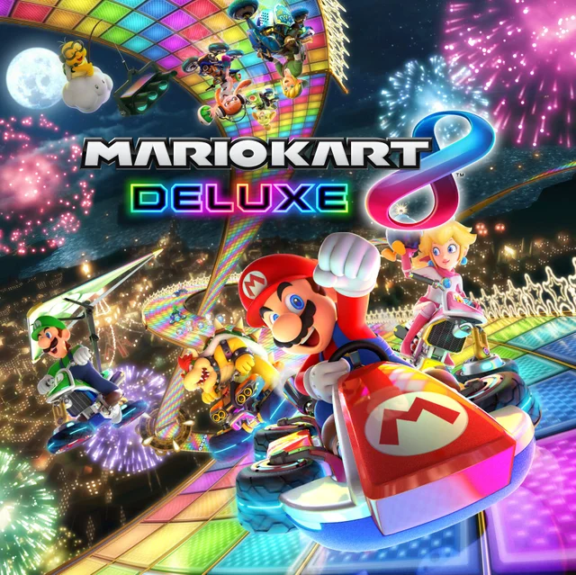

Mario Kart 8 Deluxe
Mario Kart 8 Deluxe es un juego de carreras desarrollado y publicado por Nintendo. Es el undécimo juego de la serie Mario Kart y se lanzó en 2017 para Nintendo Switch. El juego presenta un modo de un solo jugador y un modo multijugador, donde los jugadores pueden competir en línea o en pantalla dividida localmente.
Información del juego
- Desarrollador: Nintendo EAD
- Publicador: Nintendo
- Plataforma: Nintendo Switch
- Año de lanzamiento: 2017
- Género: Carreras
- Modos de juego: Un jugador, Multijugador